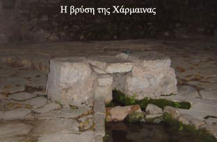

| Λαογραφικά της Αποκριάς  Το Σάββατο της Μεγάλης Αποκριάς ζωντανεύει το “Στοιχειό της Χάρμαινας”. Προστάτης του νερού της βρύσης της Χάρμαινας καθώς και των ταμπάκηδων θεωρείται το στοιχειωμένο παλικάρι που πέθανε από τον καημό του σαν γύρισε από την ξενιτιά και έμαθε για το θάνατο της αγαπημένης του. Παλιοί Σαλωνίτες αφηγούνται ιστορίες για τα βράδια που άκουγαν το στοιχειό να περνάει από τα σοκάκια. Ζωντανεύει και η σκωπτική διάθεση στις Απόκριες. Τα “κομιτάτα” αναλαμβάνουν το ρόλο των άγνωστων συντακτών εφημερίδων, που κυκλοφορούν μόνο μια φορά το χρόνο για να σατιρίσουν επώνυμους και ανώνυμους πολίτες. Προφορική μαρτυρία Γ. Σκυλογιάννη, Καλλιτεχνικού Διευθυντή Εικαστικού Εργαστηρίου Δήμου ¶μφισσας: «Η προσωπική μου ερμηνεία για το μύθο του “Στοιχειού”» Τα λαογραφικά της Απόκριας |
||